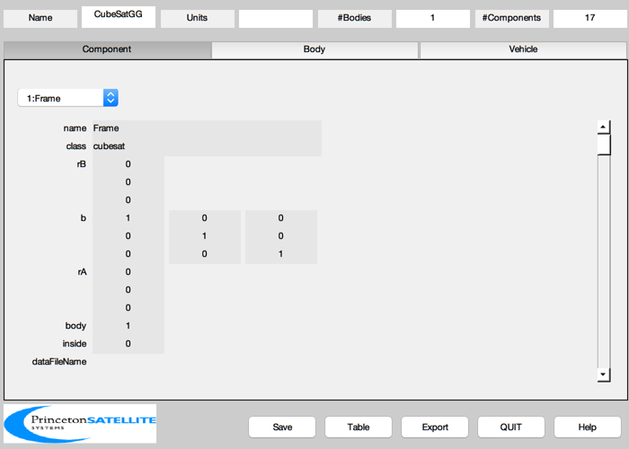
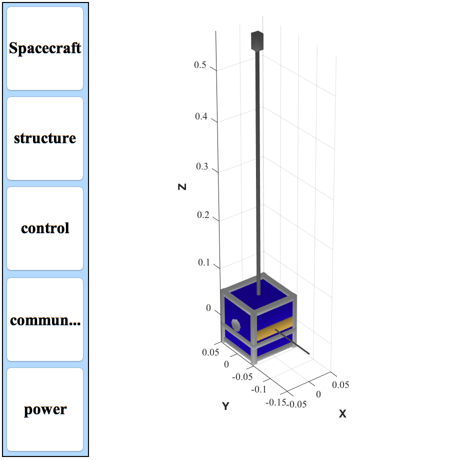

Generates a CubeSat model that is gravity gradient stabilized.
Creates a mass report.
%-------------------------------------------------------------------------- % See also BuildCADModel, CreateReport, AddCubesatComponent % -------------------------------------------------------------------------
%-------------------------------------------------------------------------- % Copyright (c) 2011 Princeton Satellite Systems, Inc. % All rights reserved. %-------------------------------------------------------------------------- % Since version 10. %-------------------------------------------------------------------------- % Properties %----------- rhoAl = 2700/1e9; % kg/mm^3 rhoArealSolarPanels = 84e-6*1e-2;% kg/mm^2 84 mg/cm^2 rhoMagneticSteel = 8120/1e9; % kg/mm^2 panelThickness = 4; % mm massFrame = 8.5*8.5*100*12*rhoAl; % Initialize %------------ AddCubesatComponent( 'CubeSatGG' ); AddCubesatComponent( 'device', 'frame', 'name', 'Frame', 'subtype', '1U', 'mass', massFrame ) % Magnetic torquers %------------------ torqueRodDipole = 10; % ATM^2 (Amp-turns-m^2) torquerPower = 0.5; torquerPosition = [-30;0;0]; % mm torquerDim = [5 5 80]; % mm (torquer long axis is z) mass = Product(torquerDim)*rhoMagneticSteel; cPUBoardPower = 1; % W cPUBoardPosition = -20; % z dimension, mm batteryPower = 20.1; % W batteryMass = 0.1; % kg batteryBoxDim = [ 20 20 40]; % mm batteryBoxPosition = [-10; 15;-40]; % mm cameraPosition = [ -50; 5; 0]; % mm cameraPower = 0.1; % W cameraMass = 0.1; % kg % Add Components to the CubeSat %------------------------------- AddCubesatComponent( 'device', 'board', 'name', 'CPU', 'position', cPUBoardPosition,... 'power', cPUBoardPower, 'mass', 0.1 ); AddCubesatComponent( 'device', 'camera', 'name', 'Camera X', 'position', cameraPosition,... 'power', cameraPower, 'boresight', [1;0;0], 'mass', cameraMass ); AddCubesatComponent( 'device', 'torquer', 'name', 'Torquer', 'position',... torquerPosition, 'power', torquerPower, 'unit vector', [0;0;1],... 'dipole',torqueRodDipole, 'dimensions', torquerDim, 'mass', mass ); AddCubesatComponent( 'device', 'box', 'name', 'Battery', 'position', batteryBoxPosition,... 'power', batteryPower , 'mass', batteryMass, 'dimensions', batteryBoxDim ) % Gravity gradient boom %---------------------- position = [0;0;300]; % of center of mass boomDim = [5 5 500]; mass = Product(boomDim)*rhoAl; AddCubesatComponent( 'device', 'box', 'name', 'Boom', 'mass', mass, ... 'position', position, 'dimensions', boomDim ) position = [0; -100; 0]; antennaDim = [2 100 2]; mass = Product(antennaDim)*rhoAl; AddCubesatComponent( 'device', 'box', 'name', 'Antenna', 'mass', mass, ... 'position', position, 'dimensions', antennaDim ) position = [0;0;560]; tipMassDim = [15 15 30]; AddCubesatComponent( 'device', 'box', 'name', 'Tip mass', 'position', position, ... 'dimensions', tipMassDim, 'mass', 0.1 ); % Panel dimension %---------------- lP = 45; % mm % Put the positions and unit vectors for the solar foil %------------------------------------------------------ position = lP*[ 1.0 0.0 -1.0 0.0 0.0 0.0;... 0.0 1.0 0.0 -1.0 -1.0 0.0;... 0.0 0.0 0.0 -0.6 0.6 1.0]; % mm u = [ 1 0 -1 0 0 0;... 0 1 0 -1 -1 0;... 0 0 0 0 0 1]; d = 2*lP*[ 1.0 1.0;... %1 1.0 1.0;... %2 1.0 1.0;... %3 1.0 0.4;... %4 1.0 0.4;... %5 1.0 1.0]; %6å for k = 1:size(u,2) name = sprintf('Solar Panel %d',k); mass = rhoArealSolarPanels*d(k,1)*d(k,2); AddCubesatComponent( 'device', 'solar panel', 'name', name, 'mass', mass, 'position', position(:,k), 'outward normal', u(:,k), 'dimensions', d(k,:) ) end % Put the positions and unit vectors for the radiator %---------------------------------------------------- dim = 2*[lP lP]; mass = rhoAl*dim(1)*dim(2)*panelThickness; AddCubesatComponent( 'device', 'radiator', 'name', 'Radiator', 'mass', mass, 'position', [0;0;-lP], 'outward normal', [0;0;-1], 'dimensions', dim ) % Put the positions and unit vectors for the gold foil %----------------------------------------------------- dim = lP*[2 0.5]; mass = rhoAl*dim(1)*dim(2)*panelThickness; AddCubesatComponent( 'device', 'gold foil', 'name', 'Antenna Panel', 'mass', mass, 'position', [0;-lP;0], 'outward normal', [0;-1;0], 'dimensions', dim ) % Put the positions and unit vectors for the gold foil %----------------------------------------------------- dim = 5*[1 1 1]; mass = dim(1)*dim(2)*dim(3)*rhoAl; AddCubesatComponent( 'device', 'magnetometer', 'name', 'Magnetometer', 'mass', mass, 'position', [0;lP;0], 'outward normal', [0;-1;0], 'dimensions', 5*[1 1 1] ) % Add subsystems %--------------- BuildCADModel( 'add subsystem', 'structure', {'frame' 'boom'} ); BuildCADModel( 'add subsystem', 'control', {'magnetometer' 'torquer' 'tip mass'} ); BuildCADModel( 'add subsystem', 'communications', {'antenna'} ); BuildCADModel( 'add subsystem', 'power', {'solar panel','battery'} ); % Update %------- BuildCADModel( 'update body mass properties' ); BuildCADModel('show spacecraft'); h = BuildCADModel('get model'); c0 = cd; p = mfilename('fullpath'); cd(fileparts(p)) CreateReport( h, 'txt', [], 'mass', 1 ) cd(c0); %--------------------------------------
Component Mass Units
Structure subsystem
Frame 0.2341 kg
Boom 0.03375 kg
Structure Subsystem Total 0.2678 kg
Control subsystem
Magnetometer 0.0003375 kg
Torquer 0.01624 kg
Tip mass 0.1 kg
Control Subsystem Total 0.1166 kg
Communications subsystem
Antenna 0.00108 kg
Antenna Panel 0.02187 kg
Communications Subsystem Total 0.02295 kg
Power subsystem
Solar Panel 1 0.006804 kg
Solar Panel 2 0.006804 kg
Solar Panel 3 0.006804 kg
Solar Panel 4 0.002722 kg
Solar Panel 5 0.002722 kg
Solar Panel 6 0.006804 kg
Battery 0.1 kg
Power Subsystem Total 0.1327 kg
Miscellaneous subsystem
CPU 0.1 kg
Camera X 0.1 kg
Radiator 0.08748 kg
Miscellaneous Subsystem Total 0.2875 kg
Total 0.8275 kg
 